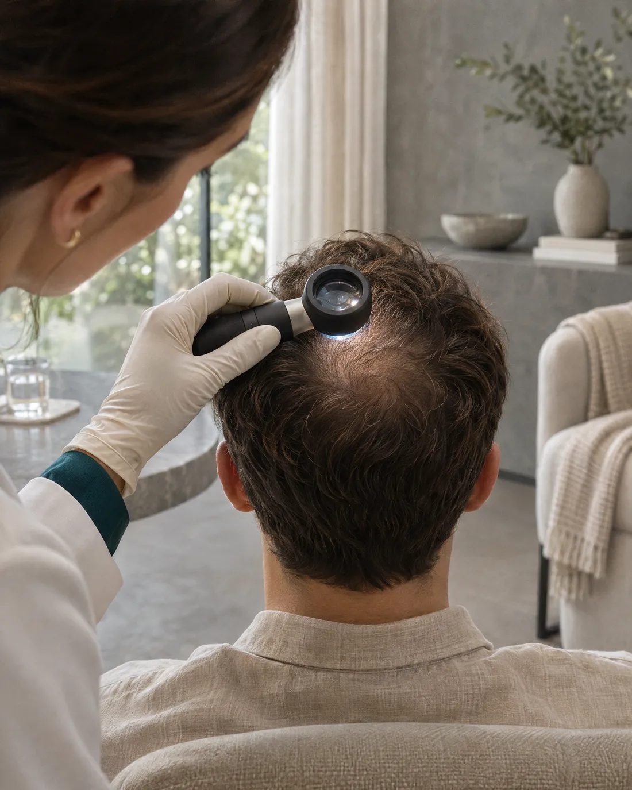
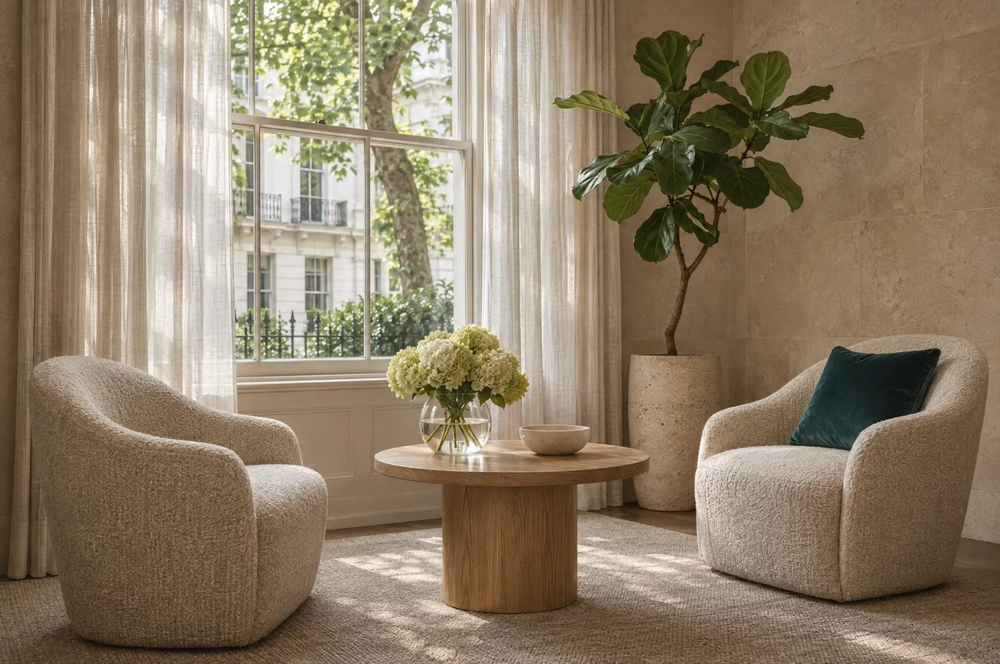

FUE
Follicular unit extraction
Grafts of one to four hairs are removed one by one with a fine punch, then placed into tiny openings in the thinning area.
- Extraction
- One at a time
- Placement
- Openings first, then forceps
- Often for
- Larger areas
Send six photos from your phone. Fatemeh looks at them herself and tells you, in writing, what is realistic for your hair.

Reviews every assessment herself. Free, private, no pressure to book.
The assessment shows you where to hold your phone for each one. Your photos are encrypted as soon as you send them and seen only by the clinical team.
Hair pushed back off your forehead
Temple and above the ear
The same on the other side
Head tilted down, from above
The swirl at the back of the top
The donor area, back and sides

She reviews every assessment personally and draws each hairline with the patient before any procedure. Every plan is made for the face it belongs to, and if the honest answer is to wait, she will tell you.
Hair loss usually follows the Norwood scale. Pick the closest for a general idea. Your assessment gives the real answer.
Stage III · seen from above, face at the top
A general guide only, not a diagnosis.

Marked on your forehead and checked with you in the mirror before anything is decided.
Height and shape allow for your age and future loss.
Single hairs at the front, angled like your own, fuller grafts behind.
Follicular unit extraction
Grafts of one to four hairs are removed one by one with a fine punch, then placed into tiny openings in the thinning area.

Direct hair implantation
The same extraction, then each graft is placed directly with a slim pen that controls angle, direction and depth.
Most of the day, under local anaesthetic. You are awake throughout. Photos illustrative.

1The plan again, consent only when you are ready.
2Marked on your skin, checked in the mirror.

3Both areas numbed. Most people listen to music.
4Grafts taken one by one and kept chilled.
5Placed at the angle of natural growth.
Written instructions, a kit, someone to ask.
It depends mainly on how many grafts you need and which technique suits you. After your assessment you get one total price in writing.
It is surgery, so there are risks. Each is explained before you decide. Most are mild and short-lived.
The short answers. Your assessment gives the ones that apply to you.
It depends on the pattern and stage of your hair loss, your donor area, your age and your expectations. That’s what the free assessment is for. If a transplant isn’t right for you, you’ll be told.
Both take grafts one by one from the donor area. With FUE the openings are made first and grafts placed into them. With DHI a pen makes the opening and places the graft in one movement.
No honest answer is possible without seeing your hair. It depends on the area, the density you want and how much donor hair can safely be spared. Your written quote includes an estimated range.
It’s done under local anaesthetic, so your scalp is numbed. Most discomfort comes from the injections and the tenderness afterwards. Pain relief is discussed before treatment.
Transplanted hairs usually shed in the first weeks, which is expected. New growth starts over the following months and keeps maturing for a year or more.
They are encrypted the moment they arrive, never published or emailed, and seen only by the clinical team. You can ask for them to be deleted at any time.
A free, private assessment from six photos taken on your phone. Fatemeh replies personally, with an honest plan and a written quote.
 Model
Model